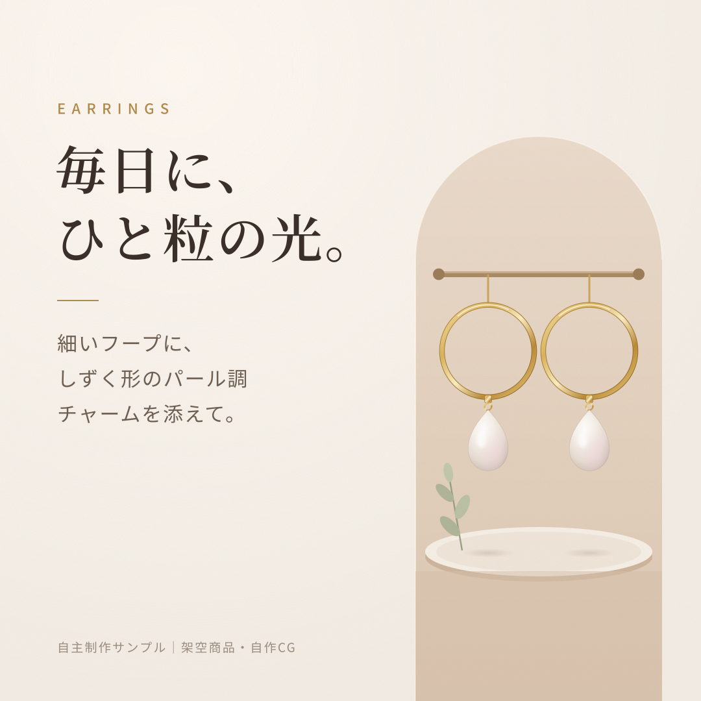
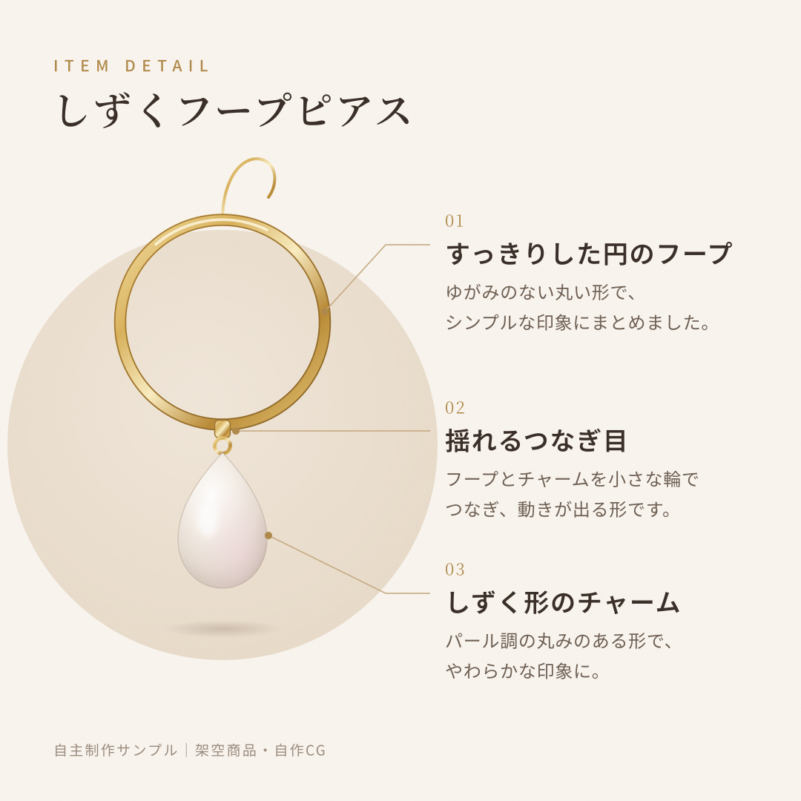

DESIGN FOR YOUR NEXT STEP小さな事業のための Web制作・改善
FEATURED DESIGN01 / SALON
LP DESIGN / WEBSITE IMPROVEMENT単発のご依頼 · 範囲を決めた固定見積もりSCROLL TO EXPLORE ↓
制作例
Selected works.
雰囲気を伝えるデザインから、情報を整理する改善まで。
すべて架空の事業を想定した自主制作です。
SNS BANNER / PRODUCT IMAGE / 自主制作
雰囲気を伝える。形をわかりやすく見せる。
架空のアクセサリーをコードで描いたCGと、文字・余白のレイアウトを組み合わせた制作例です。同じ商品を、紹介投稿と商品説明の2つの役割で見せています。


大きな見出しと落ち着いた配色で、商品の雰囲気を表現。文字と商品の距離を取り、視線が順に移る配置に整えました。
画像を大きく見る ↗

商品を大きく置き、形の特徴を3つに整理。番号・引き出し線・文字の強弱で、説明する場所と文章をつなげました。
画像を大きく見る ↗自主制作サンプル / 架空商品・コードで描いたCGを使用 / 元データ：HTML・SVG
掲載作品は顧客の採用実績や効果測定結果ではありません。各デモの予約・問い合わせは送信されません。
HOW I WORK
見た目を整える。
伝える順番まで、考える。
何を届けたいか。どこから相談してほしいか。
事業の目的を、文章と画面の両方に落とし込みます。
目的と、必要な範囲を決める。
対象ページ・読者・困っていることを確認。作業範囲、納品物、費用、納期を着手前にすり合わせます。
らしさと、読みやすさを両立する。
写真・配色・文字組みをそろえ、サービスの魅力を表現。見出しから相談ボタンまで、読む順番を整えます。
確認結果も、納品物にする。
合意した画面幅の表示やリンクを確認。変更一覧を添え、何を直したか分かる形でお渡しします。
サービス・料金
Small start.
Clear scope.
1ページから、必要な範囲だけ。
素材と内容を確認し、固定のお見積もりをご案内します。料金はすべて税込です。
静的ページの小修正
直したい場所が、決まっている方へ。
- 1ページ・軽微な修正3か所まで
- 支給文章・画像の差し替え、余白等の調整
- PC・スマホ表示確認、変更一覧
- 調整1回 / 素材・仕様確定後3〜5営業日目安
¥15,000〜税込小修正を相談する ↗
文章・相談導線の改善
伝える内容と順番を、整理したい方へ。
- 静的な1ページ・改善5点まで
- 文章500字以内 / 相談ボタン1か所
- 修正前後の画像、表示・リンク確認報告
- 調整1回 / 素材・仕様確定後5〜7営業日目安
¥30,000〜税込改善を相談する ↗
サービス紹介LP制作
魅力をひとつのページで、届けたい方へ。
- 素材支給 / 静的1ページ・6セクション程度
- 構成整理・デザイン・HTML / CSS実装
- PC・スマホ対応 / 既存の相談先へのリンク
- 軽微修正2回 / 資料確定後7〜10営業日目安
¥55,000〜税込LP制作を相談する ↗
料金・日数は作業内容、素材の受領、確認期間に応じて確定します。追加ページ、大幅な構成変更、CMS改修、予約・決済システム、撮影、有料素材・サーバー費用は含みません。公開作業や追加対応は事前にお見積もりします。
制作会社さまへ / デザイン工程のみのご相談
協業を相談する ↗FigmaでのLP・ページデザインも、対象範囲・納品形式・ご予算を確認して個別にお見積もりします。
ABOUT
掃部 託矢
Takuya Kamon個人事業「KAMON DESIGN」として、Webページの制作・改善、文章の整理に取り組んでいます。小さな事業の魅力が、必要な人にきちんと届く見せ方を考えます。
Web制作を約2〜3年独学で学び、Webデザイナーとして約4〜5か月の正社員勤務を経験。学習・自主制作と勤務経験を分けてお伝えしています。
生成AIは下書き・実装の補助に使用します。案件ごとの利用条件を確認し、非公開情報を無断で外部AIへ入力しません。
HTML / CSS / JavaScript / Figma / Canva
ご相談の前に
Questions.
どこを直せばよいか分からなくても相談できますか？
対象URLと「料金を見つけやすくしたい」などの目的をお知らせください。まず対応可否と範囲を確認します。詳しい診断や修正は、有料対応の範囲を決めてから進めます。
WordPressや予約機能にも対応していますか？
現在は静的なHTML / CSSのページを中心にお受けしています。CMSやフォーム、予約・決済機能は仕組みを確認して対応可否をお伝えします。基本料金には含まれません。
問い合わせ数や売上の増加は保証されますか？
成果の数値は保証できません。合意した文章・デザイン・リンク等の変更と、表示・操作の確認結果を納品します。
Let’s talk.
今のページと、
変えたいことを教えてください。
完成した仕様書や専門用語は不要です。
内容を確認し、対応範囲・固定見積もり・納期をご案内します。
クラウドワークス・ランサーズ等からお越しの方は、
ご利用の媒体内のメッセージでご連絡ください。
この欄からは送信されません。ご利用の媒体やメールへ貼り付けてください。パスワードの送付は不要です。